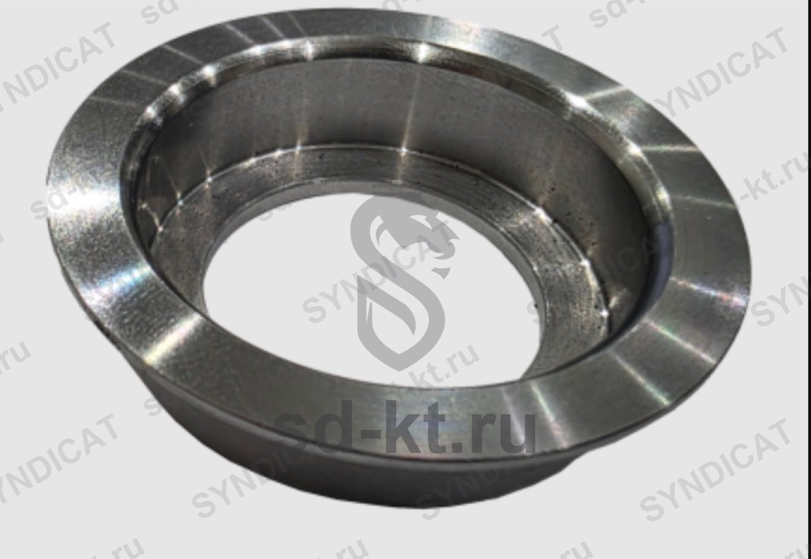

Узел корпуса уплотнения насоса Corken FD-150
Артикул: 1187
2 100 ₽
Раздел: Комплектующие к насосам FD-150 · АГЗС
Наличие и сроки — по запросу. Поставляем оригинал и аналоги. Доставка по России.
Описание
Узел корпуса уплотнения насоса Corken FD-150 — позиция из раздела «Комплектующие к насосам FD-150» для АГЗС. Компания SYNDICAT поставляет оборудование и комплектующие для автозаправочных и газозаправочных станций по всей России. Цена и наличие «Узел корпуса уплотнения насоса Corken FD-150» — по запросу: оставьте заявку или позвоните, подберём оригинал или аналог и рассчитаем доставку.